Geolocation Based Website:
The idea of the project is to have a client/server location based interface where the user may submit locations, reviews and ratings, and those submissions will promptly become part of the central map. Unfortunately this project is only about 95% complete. All the source code may be found on my Github, linked on the bottom right.
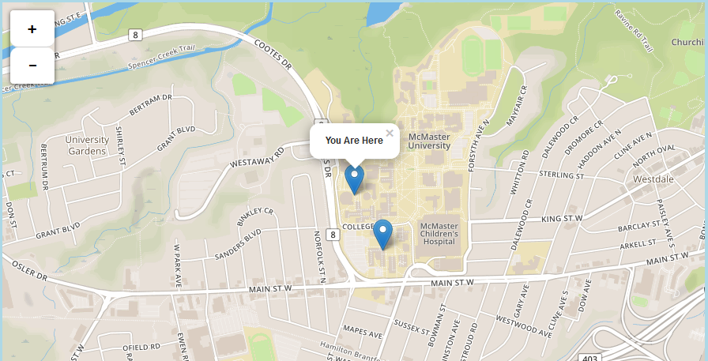
The API I used for the map was Leaflet. I believe that Leaflet provided the nicest looking maps that are also quite simple to implement. As you can see above, it doesn't crowd the user. The user is able to add markers to the map which are uploaded to a server. The markers include various pieces of information as mentioned above. To do this I set up a database table to contain all the marker information.
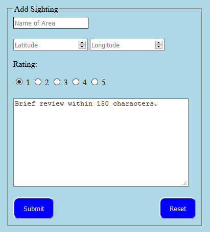
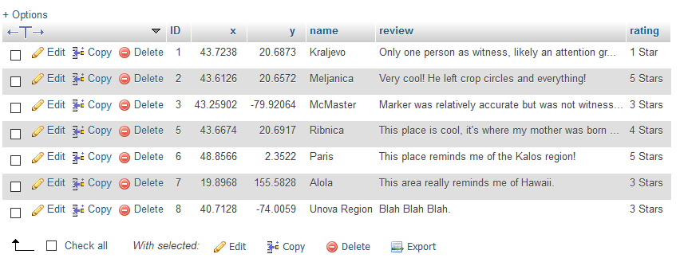
The ability to add markers is contingent on the user being logged in. If they are not aregistered user they will not be bale to manipulate any data.
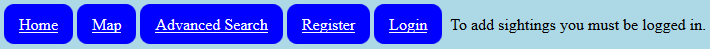
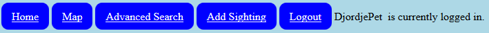
In the code you will see that proper security measures were taken place. This includes preparing SQL statements to counteract SQL injection attacks, JavaScript form validation, back-up server-side form validation in the case that the user disabled JavaScript and also only using POST statements.
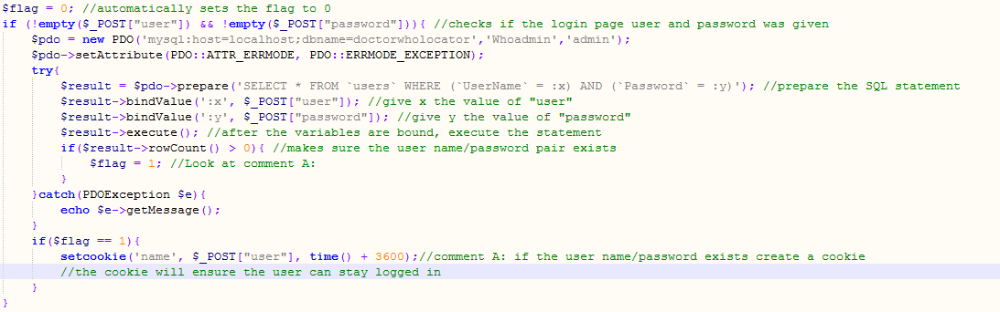
I plan on finishing the remaining 5% of this project at a later time. This will include being able to upload images and being able to upload multiple reviews per marker. Currently there exists a small bug in the search function, this will also be changed when I make the other changes.
Conway's Game of Life:
This is a relatively simple self-playing game I developed in g++. The game is essentially a population simulator where the entire screen is populated with cells. This can be done in a random fashion or in an ordered fashion. The game goes through enough generations until it has reached a stable, unchanging state. The rules of the game are as follows:
• If there is a living cell with less than two living adjacent cells, it dies.
• If there is a living cell with either two or three living adjacent cells, it lives to the next generation.
• If there is a living cell with more than three living adjacent cells, it dies.
• If there is a dead cell with exactly three living adjacent cells, it comes to life.
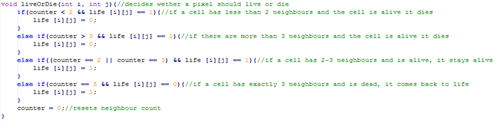
In order for this project to work I decided that I would start by splitting up the entire page into a grid using enlarged pixels. Since pixels are squares I simply made them into 10x10 pixel making up a 245x245 pixel screen. The next step after setting up the grid is making a random number number of the pixels into living cells and the rest into dead cells. Following this a function combs through the entire grid, counts the number of living adjacent cells, and makes a decision based on the rules stated above. This is what a generation refers to.
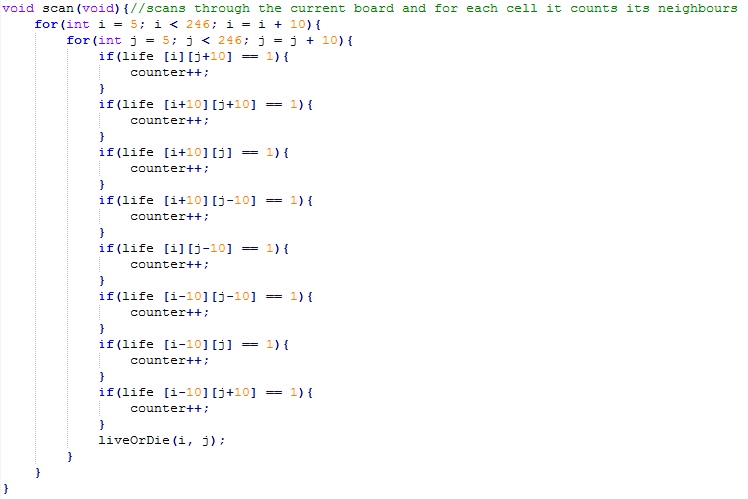
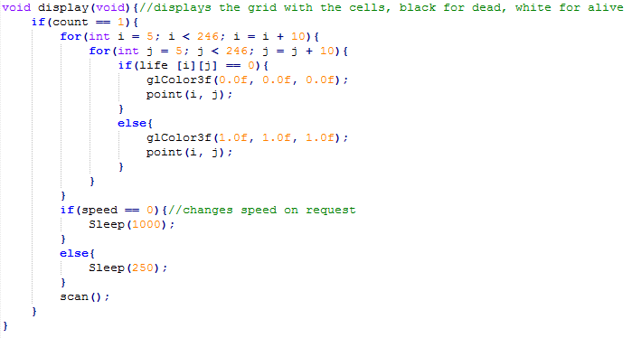
There is a few other extra pieces of the projects which I will now detail. The user has the ability to control the speed of the generations, pause the generations, clear the screen, reset the whole application, create a living cell on mouse click and remove a living cell on mouse click. The code for this is displayed below:
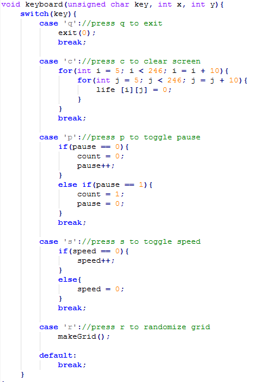
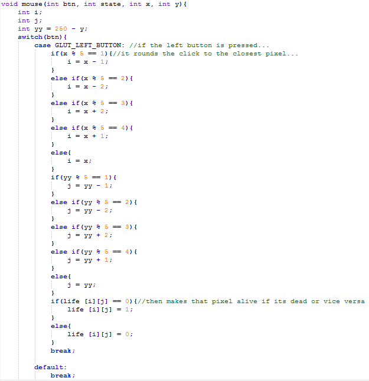
All the source code displayed above can be found on the github link on the bottom right of the screen.
Requirements Documentation:
For my capstone project in my final year of University, I was appointed supervisor of requirements and any other documentation. During this time I spent a great deal of time working on making the general requirements document for our product. Our product was a software/hardware application called FollowThrough which was essentially a virtual basketball coach. I have included a short example of the requirements below, but the rest may be found on my github account linked on the bottom right corner.
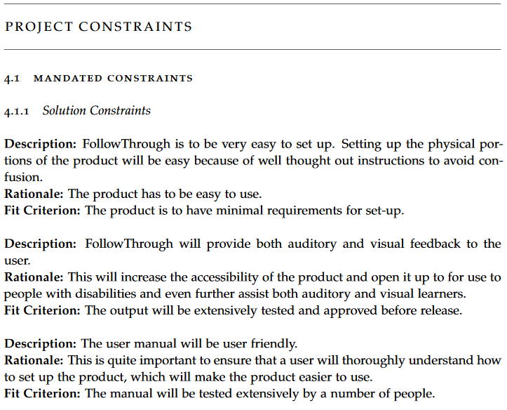